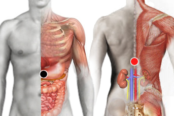

Corynebacterium Diphtheriae
Par
estómago - suprarrenales

Generalidades:
Pertenece a un género de bacilos formado por más de 50 especies. Presentes en la naturaleza en suelos, agua, alimentos... y también presentes en las mucosas y piel de humanos y otras especies animales. Con el sudor proliferan y causan el olor característico.
La especie diphtheriae puede resultar patógena, sobre todo en personas inmunodeprimidas (produce la toxina diftérica). Afecta particularmente vías respiratorias provocando: neumonitis, faringitis, endocrditis, linfadenitis.
También pudiera ser la causante de la dermatitis atópica.
El uso de catéteres, válvulas o dispositivos similares favorece procesos infecciosos.
Transmisión
Presente en piel, mucosas y en el medio ambiente.